An explain plan is a representation of the access path that is taken when a query is executed within oracle
The explain plan is produced by the optimizer.Once the access path has been decided,it is stored in the library
cache memory structure together with the statement itself
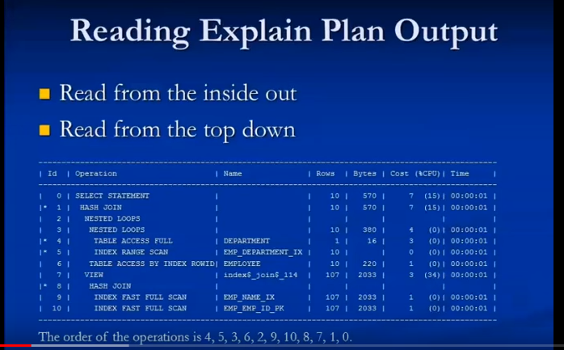
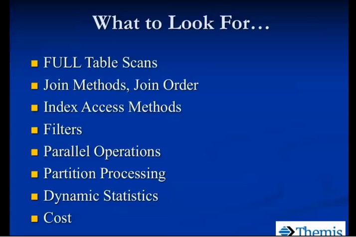
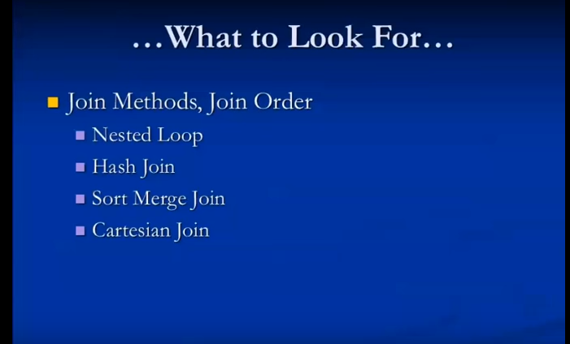
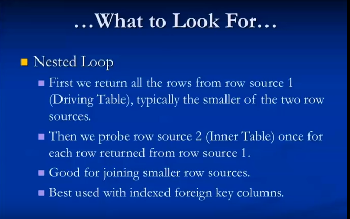
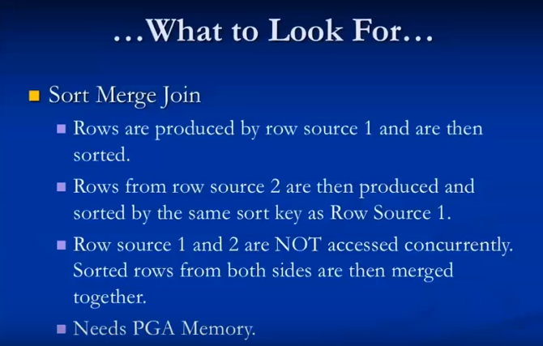
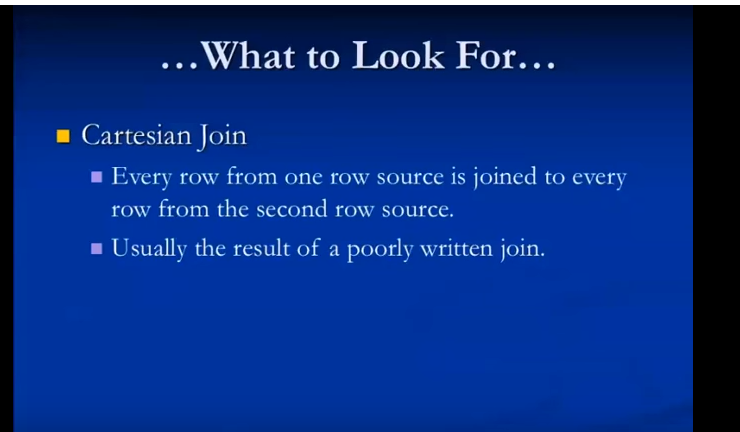
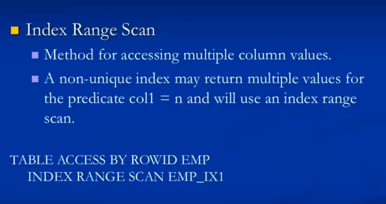
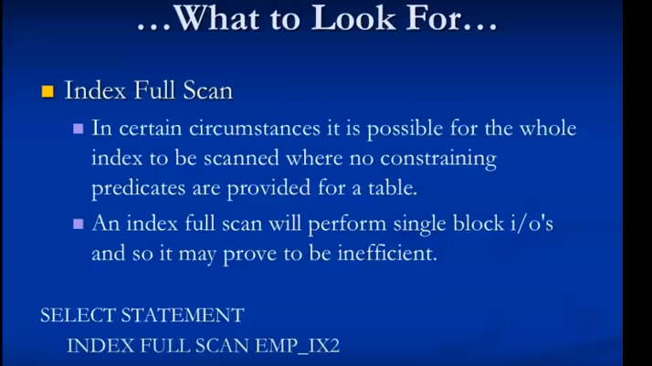
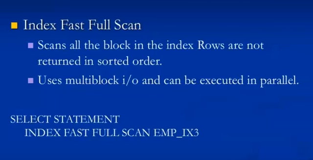
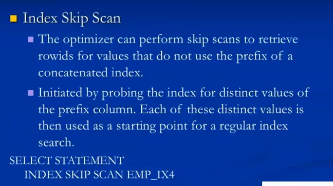
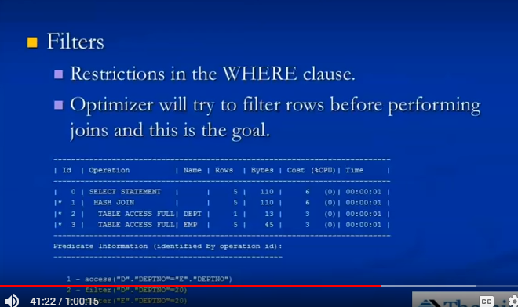
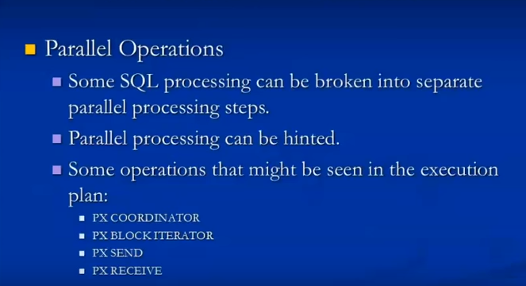
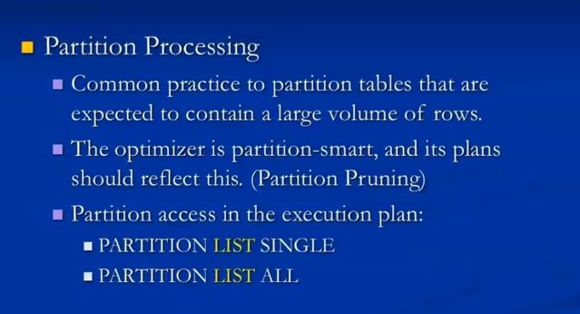
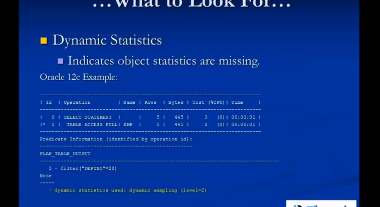
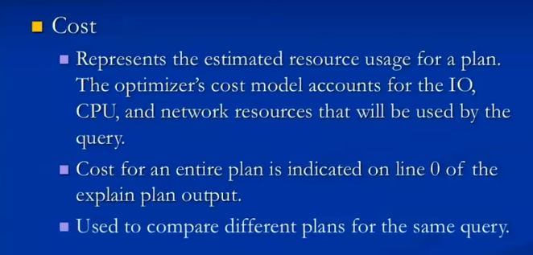